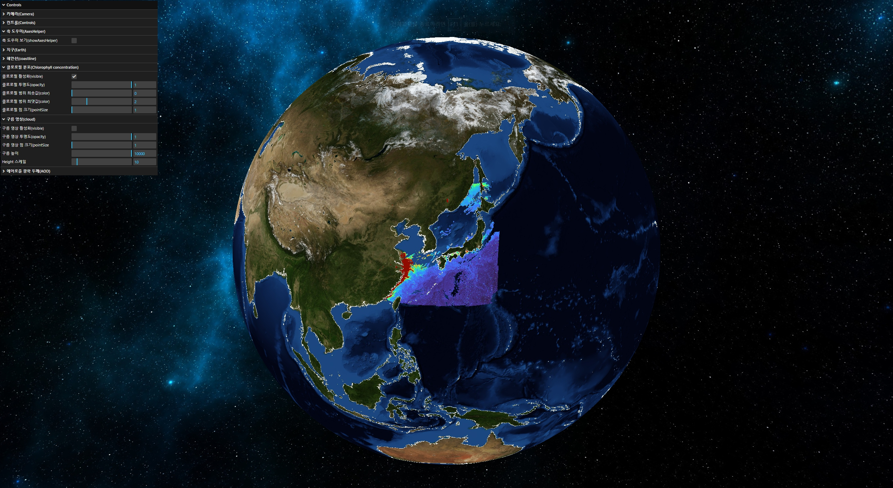
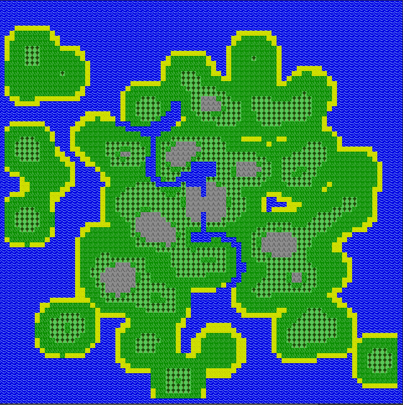
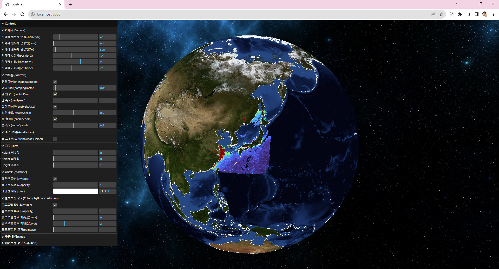

해양위성 3D 가시화 발표자료

해양사업그룹@올포랜드
배경

-
2D 지도는 이제 지겹다... 디지털 트윈과 같이 좀더 사실적인 3D 지도 위에 다양한 3D
인터랙션이 가능한 데이터 분석을 할 수 없을까?
-
기존 라이브러리를 활용해 천만개 ~ 일억개 셀 수 이상의 대용량 그리드 데이터를
렌더링하는데 한계가 있다.
-
공간정보 또는 지도 라이브러리에 의존하지 않고 좀 더 Low-Level 단의 작업을 통해 없는
기능들을 만들며 직접 커스터마이징해보고 싶은 욕심이 생겼다.
변수 제어
포인트 형태 또는 텍스쳐를 이용한 래스터 형태의 가시화
변수 토글 온/오프, 투명도 설정, 최솟최댓값 조정, 색상 스케일 선택
해안선
해안선 토글 온/오프, 투명도 설정, 단일 색상 선택
지형지물
Heightmap 스케일 값 조정으로 고도 및 수심 반영
기타 기능

그 외 다양한 파라미터들을 업데이트 시 바로 적용 (카메라, 축 도우미, 줌 및 회전 속도
등)
활용용도
-
사실주의적 3D 가시화 및 인터랙션 -> 교육/홍보에 활용 가능
-
GPU-가속 렌더링으로 빠른 속도 -> 신속한 의사결정 지원
-
WebGL을 활용하여 기존의 공간정보 및 지도 라이브러리보다 더 Low-Level 단에서
커스터마이징 -> 새로운 기능 추가 가능성 unlimited